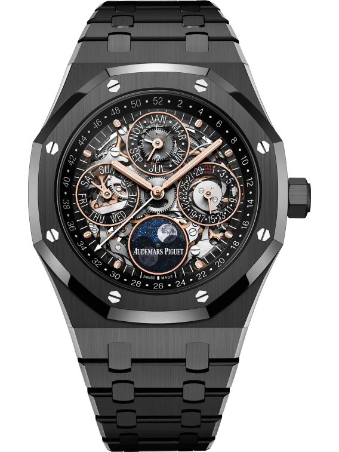
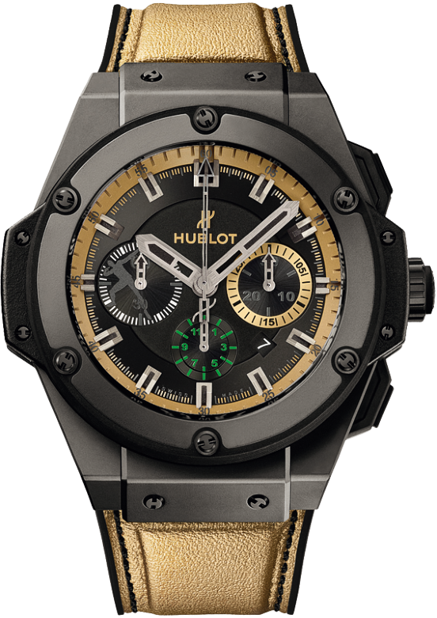
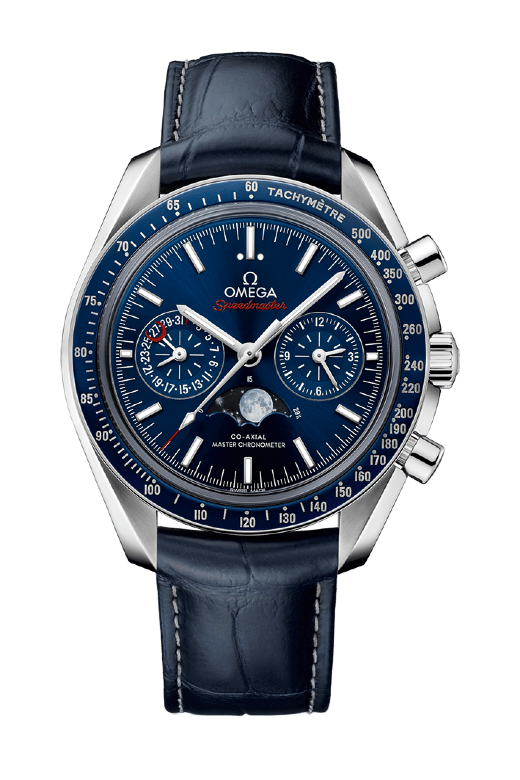

Rolex

Audemars Piguet

Richard Mille

Omega
De Rolex Submariner is een iconisch duikhorloge, bekend om zijn precisie, robuustheid, waterbestendigheid en tijdloze luxe uitstraling wereldwijd.
De Royal Oak combineert sportieve elegantie met technisch meesterschap. Het iconische achthoekige ontwerp symboliseert luxe, precisie en Zwitserse innovatie.
revolutionair vakmanschap. Hublot: brutale luxe. Twee iconen van avant-garde horlogerie, elk met een eigen, onmiskenbare identiteit
legacy of precision. Moon missions to 007. Timeless mastery meets bold innovation. Swiss excellence since 1848. Worn by legends. Defining moments Forever.